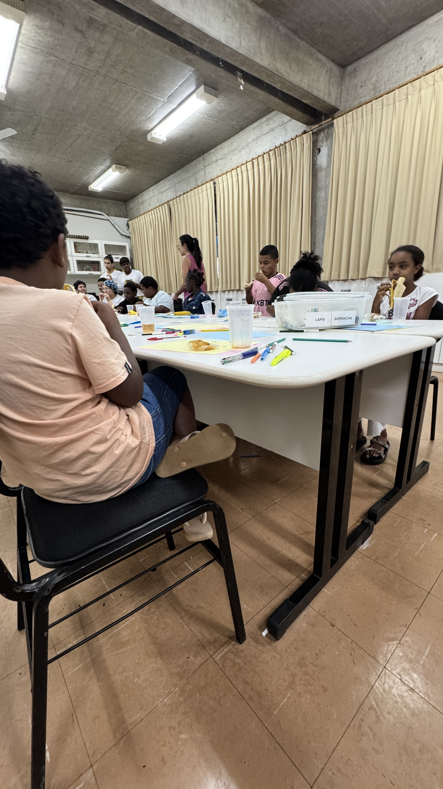
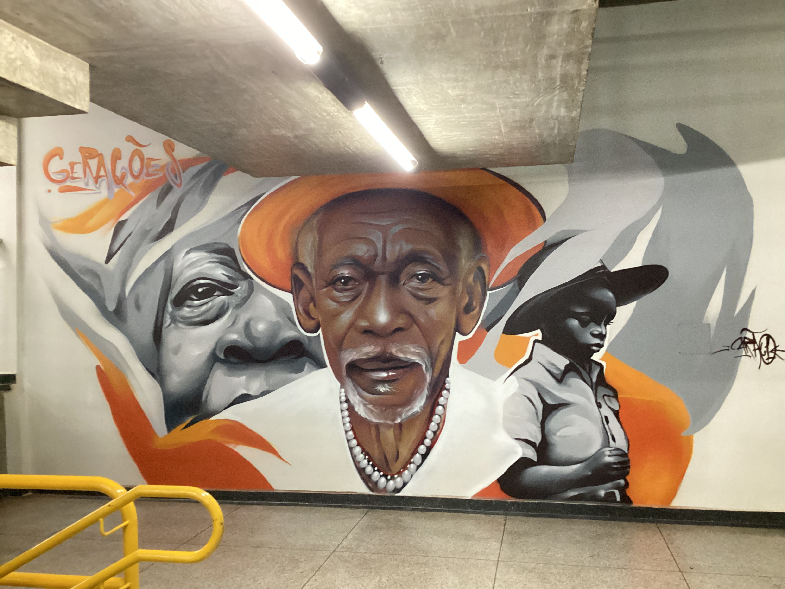

Pesquisa e Curadoria
2018 • mapeamento colaborativo
Documentamos histórias com apoio de universidades, coletivos e redes territoriais para garantir rigor e diversidade no acervo.
Ver acervo completo

O NEABI e o projeto Mulheres Extraordinárias caminham juntos para registrar letras de histórias, celebrar trajetórias negras e indígenas e difundir inspiração para novas gerações.
Explorar histórias inspiradorasPlataforma idealizada para conectar pesquisa, arte e memória com foco em mulheres que resistem e transformam.

A página Quem Somos é um convite para compreender como o NEABI, em diálogo com educadoras, pesquisadores e comunidades, constrói um acervo vivo e aberto para que vozes negras e indígenas sigam sendo referência para o presente.
2018 • mapeamento colaborativo
Documentamos histórias com apoio de universidades, coletivos e redes territoriais para garantir rigor e diversidade no acervo.
Ver acervo completo

Rodas de conversa • oficinas híbridas
Conectamos escolas e espaços culturais para levar as trajetórias para o cotidiano por meio de oficinas e publicações.
Programas educativos

Circuitos 2026 • itinerância nacional
Exposições móveis e debates circulam pelo país para garantir que essas histórias sejam acessíveis e celebradas localmente.
Próximos encontros
Por meio do NEABI, conectamos linguagens, saberes e estratégias para garantir que as histórias de mulheres extraordinárias sigam sendo potência política, estética e pedagógica.
.jpg)

Biblioteca digital • aberta
Colecionamos entrevistas, fotografias, vídeos e depoimentos que estão disponíveis para download e consulta pública.
Entrar no acervo


Redes diversas • diálogo aberto
Promovemos encontros com instituições públicas, coletivos artísticos e redes de mulheres para construir ações coletivas.
Conheça as parcerias
Atuamos com agentes culturais em bairros e periferias para garantir que o protagonismo seja dado às narrativas que já existem nos territórios.
Relatórios e documentos de prestação de contas estão disponíveis; nossa convicção é que a memória deve caminhar com responsabilidade.
Recebemos contribuições contínuas de escolas, artistas e pesquisadoras para alimentar o acervo com novas trajetórias e olhares.
Conecte-se
Compartilhe indicações, participe de eventos ou proponha iniciativas colaborativas. Estamos abertos a parcerias com comunidades, escolas e instituições.
Email: contato@mulheresextraordinarias.com
Redes Sociais: